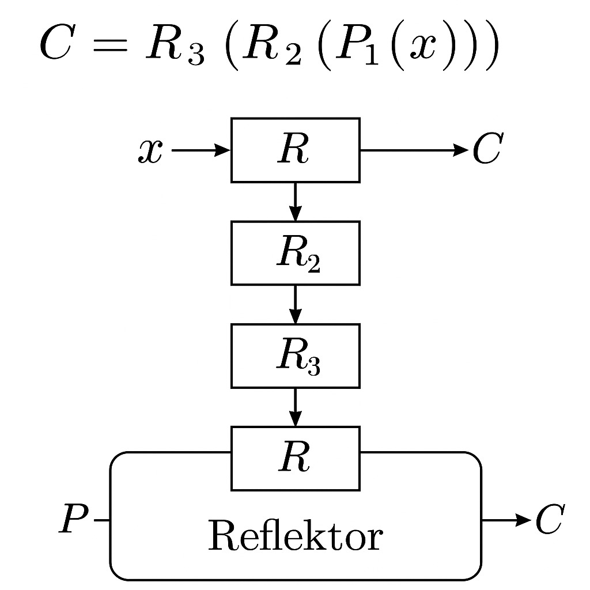

A máquina Enigma, desenvolvida por Arthur Scherbius, foi uma das ferramentas de criptografia mais avançadas usadas na Segunda Guerra Mundial. Ela utilizava fórmulas baseadas em substituição e permutação de caracteres, combinadas com rotores que giravam a cada tecla pressionada, criando uma cifra quase impossível de ser quebrada sem o conhecimento adequado.
A máquina Enigma é composta por uma série de rotores, conectados a uma tábua de substituição e a um painel de conexão elétrica. Cada rotor contém uma permutação das letras do alfabeto e gira conforme a digitação, alterando a sequência de letras e garantindo que a cifra seja alterada a cada operação.
Considere a seguinte fórmula simplificada:
C = E(P, K)
Onde:
Mensagem original: "HELLO"
Resultado cifrado (hipotético): "MFNQZ"
Com sua complexidade e rotatividade, a Enigma mostrou o quanto as fórmulas e configurações matemáticas podiam transformar a segurança de mensagens. Seu estudo é essencial para entender a história da criptografia moderna.